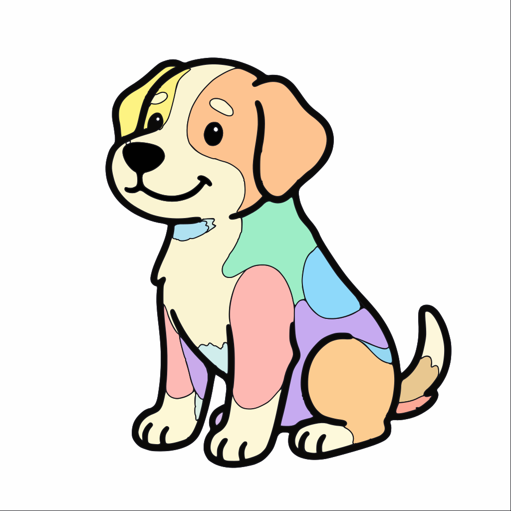
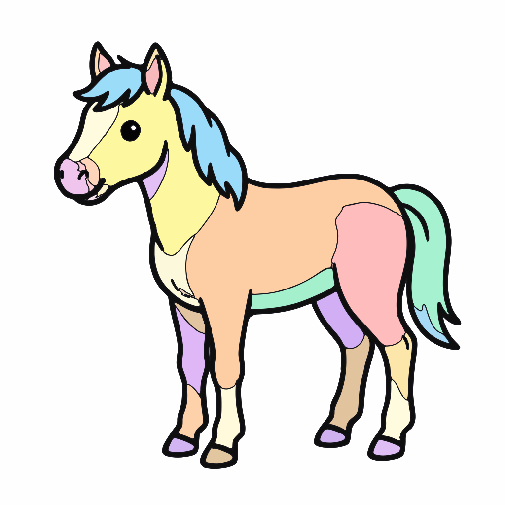
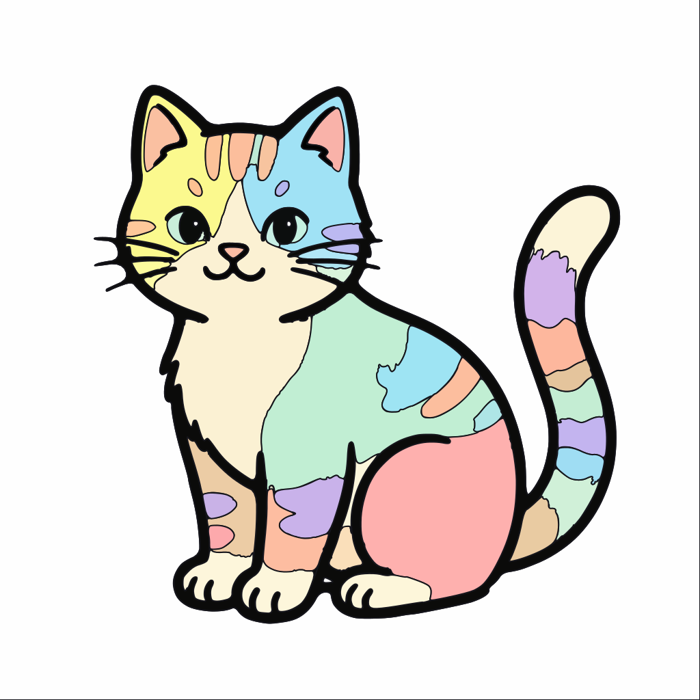
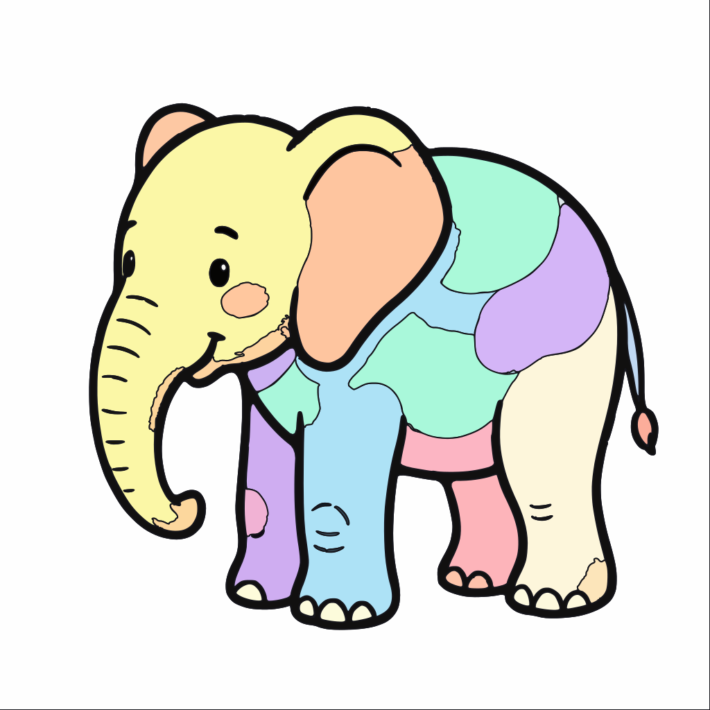
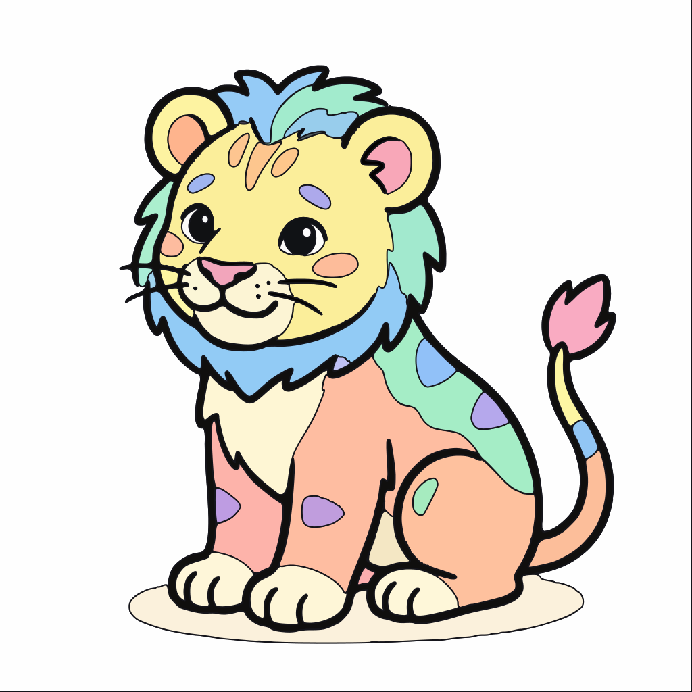
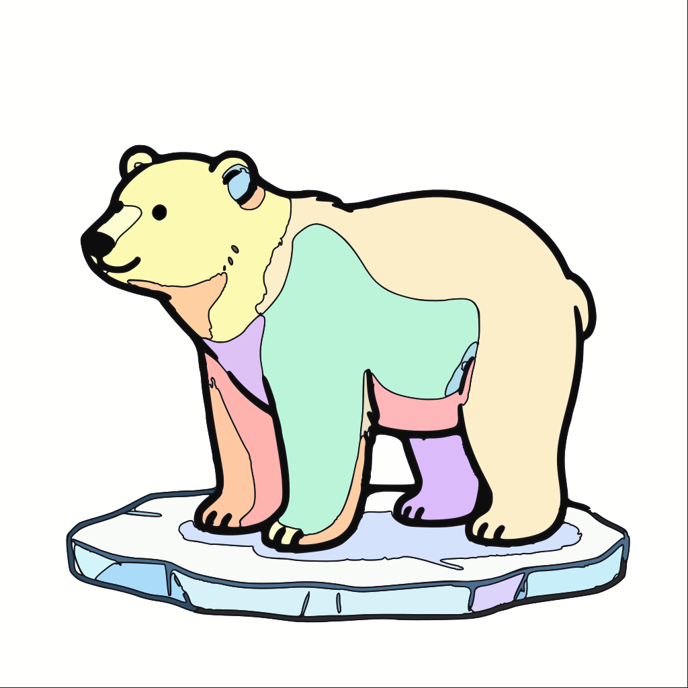
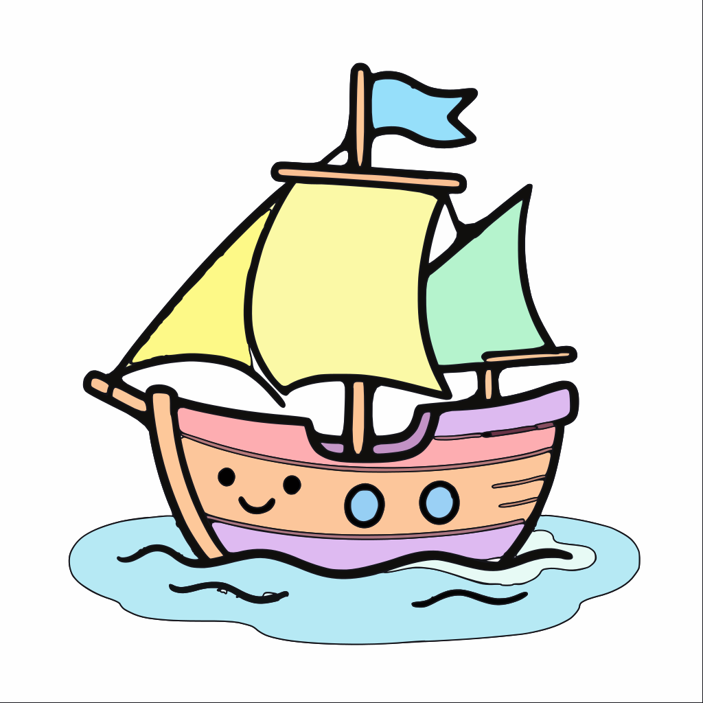
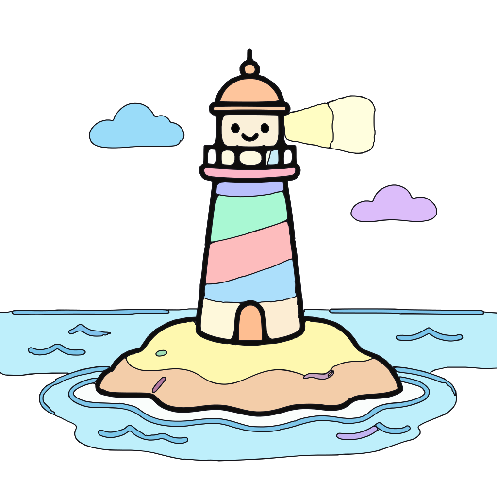
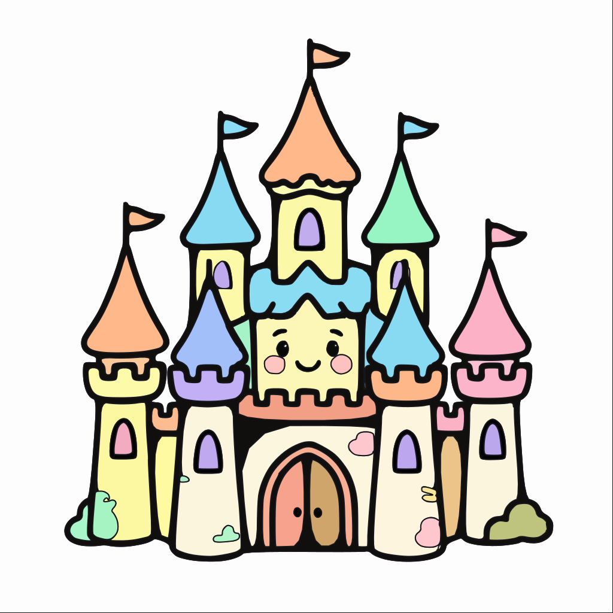
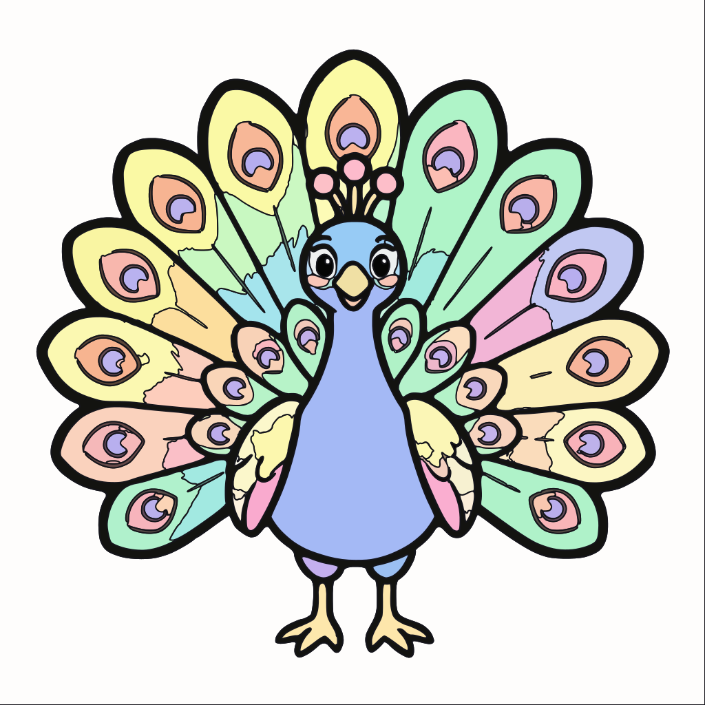

Chaque carte ci-dessous charge un SVG en tag <img>. Si le navigateur sait afficher
le SVG vectoriel, il l'affiche tel quel. Critere pass : 0 marche d'escalier visible
a zoom 200 % (zoom navigateur).
#01 pastel_dog
polylines: 41 | pts: 7706 |
non couvert: 0.000 % |
jonctions triples: 44 | 4+: 0

#02 pastel_horse
polylines: 59 | pts: 9228 |
non couvert: 0.000 % |
jonctions triples: 56 | 4+: 0

#03 pastel_cat
polylines: 73 | pts: 10782 |
non couvert: 0.000 % |
jonctions triples: 92 | 4+: 0

#04 pastel_elephant
polylines: 94 | pts: 10175 |
non couvert: 0.000 % |
jonctions triples: 38 | 4+: 0

#05 pastel_lion2
polylines: 91 | pts: 13068 |
non couvert: 0.000 % |
jonctions triples: 80 | 4+: 0

#06 taxo_polar_bear_on_ice
polylines: 63 | pts: 10384 |
non couvert: 0.000 % |
jonctions triples: 78 | 4+: 1

#07 pastel_pirate_ship
polylines: 77 | pts: 7586 |
non couvert: 0.000 % |
jonctions triples: 41 | 4+: 0

#08 pastel_lighthouse
polylines: 75 | pts: 7661 |
non couvert: 0.000 % |
jonctions triples: 44 | 4+: 0

#09 pastel_castle
polylines: 138 | pts: 12607 |
non couvert: 0.000 % |
jonctions triples: 27 | 4+: 0

#10 pastel_peacock
polylines: 283 | pts: 25796 |
non couvert: 0.000 % |
jonctions triples: 258 | 4+: 5
